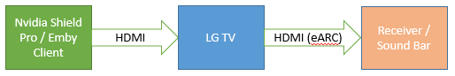

Atmos auf LG TV
Warum spielt die Emby App auf meinem LG TV das Dolby Atmos TrueHD Audio nicht ohne Transkodierung ab?
Warum spielt die Emby App auf meinem LG TV das Dolby Atmos TrueHD Audio nicht ohne Transkodierung ab?
von rbjtech
Warum spielt die Emby App auf meinem LG TV das Dolby Atmos TrueHD Audio nicht ohne Transkodierung ab?
Hintergrund
Es gibt zwei primäre Arten von Audio, die mit Mediendateien abgespielt werden können –
Komprimiertes Audio (z.B. AC3/AAC/DTS Core etc.) und unkomprimiertes (oder HD) Audio (z.B. True-HD, DTS-HD etc.)
Komprimiertes Audio benötigt deutlich weniger Daten (Bitrate) und wird daher bei Streaming-Diensten wie Netflix verwendet, während HD Unkomprimiertes Audio das primäre Audio auf 'physischen' Medien wie Blu-Ray oder Ultra HD Blu-Ray Disks ist, da sie mehr Kapazität zur Datenspeicherung haben. 'Rips' dieser physischen Medien können die HD Audio Streams enthalten, was ein technisches Szenario schafft, das außerhalb des ursprünglichen LG Architekturschemas liegt.
Wo kommt Atmos ins Spiel?
Dolby Atmos ist eine Technologie, bei der dem Ton zusätzliche Daten hinzugefügt werden, sodass er zusätzliche Positionierungslautsprecher nutzen kann, die Teil Ihrer AV-Soundkonfiguration sein können. General sind dies „Höhen“-Lautsprecher, die Ihnen das volle 360-Grad-Erlebnis bieten.
Atmos-Daten können sowohl auf komprimiertes Audio (in Form von Dolby Digital PLUS – EAC3) als auch auf HD-Audio in Form von True-HD (THD) angewendet werden.
Wie kann ich Emby dazu bringen, Atmos über meine Soundbar oder meinen AV-Receiver abzuspielen?
Da die meisten Menschen ihren DVD/Blu-Ray-Player direkt an den Fernseher anschlossen, wurde ein Standard namens ARC (Audio Return Channel) eingeführt, um das Audio vom Fernseher zurück zum externen Verstärker zu übertragen. Ursprünglich geschah dies über ein optisches oder Koaxialkabel, heute jedoch über HDMI. Das war großartig für DD/DD+/DTS-komprimierten Sound, jedoch wurde es nie für unkomprimierten Sound entwickelt, da die Hardware nicht verfügbar war.
Note
Streaming-Dienste/interner LG Emby-Client nutzen die ARC-Schnittstelle, um DD+ Atmos (komprimiert) ohne Probleme an eine Soundbar oder einen Receiver zu übertragen.
Für HD Audio jedoch wurde ein neuer Standard eingeführt, genannt 'eARC' oder Extended ARC. Dies funktioniert nur über HDMI und wichtig ist, dass sowohl die TV-Hardware, die TV-Software/Firmware als auch der Verstärker eARC unterstützen müssen.
Hier liegt das Problem von LG
Bei Modellen ab 2019 unterstützt die TV-Hardware eARC, jedoch nur von externen Quellen, nicht vom TV selbst. Da das Audio aus dem Emby LG Client intern im TV generiert wird, ist die Hardware, um eARC zu nutzen, schlichtweg nicht vorhanden. Leider kann dies durch kein Firmware-Update behoben werden, da die physische Hardwareverbindung fehlt - ein massives Versäumnis von LG selbst bei den neuesten 2020er TVs.
Zusammengefasst haben Sie zwei Optionen, um HD Audio Dolby Atmos abzuspielen:
Option 1

Wenn Ihr LG TV ab dem Jahr 2019+ ist und eARC hat, können Sie das HD Audio über einen externen Player über die TV-eARC-HDMI-Schnittstelle an Ihren Receiver oder Ihre Soundbar weitergeben.
Option 2
Wenn Ihr LG TV kein eARC hat, können Sie das HD Audio direkt über einen externen Player an Ihren Receiver oder Ihre Soundbar() weitergeben. Das Video wird dann nur an den LG TV übertragen. Weder ARC noch eARC sind erforderlich. () Beachten Sie, dass die Soundbar/der Receiver eine HDMI-Durchschnittsschnittstelle haben muss.

Das direkte Verbinden des LG TVs mit dem ARC- oder eARC-fähigen Receiver/Soundbar funktioniert nur für komprimiertes Audio (DD,DD+), nicht jedoch für HD Audio ohne Emby-Transkodierung der Streams.